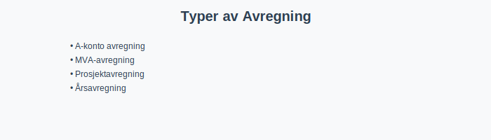
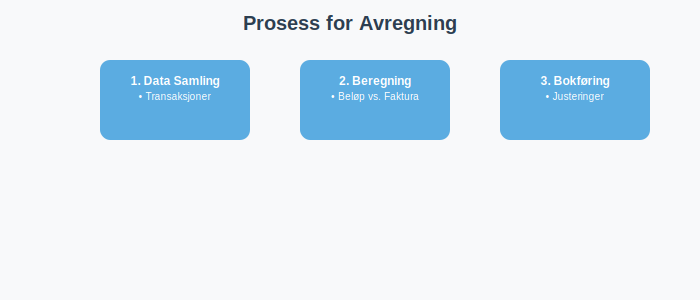

Avregning i regnskap er prosessen for å beregne og bokføre korrekte beløp basert på estimater, delbetalinger, periodiseringer eller eksterne data. Korrekt avregning sikrer at regnskapet reflekterer den faktiske økonomiske situasjonen og bidrar til pålitelig økonomistyring i norske bedrifter.
Hva er Avregning?
Avregning innebærer å sammenligne og justere regnskapsdata for å sikre at alle beløp er korrekte og fullstendige. Dette kan omfatte:
- Delbetalinger: Som A-konto betaling
- Estimater: Som forbruk av tjenester eller materialer før endelig faktura foreligger
- Rekonsiliering: Som MVA-avregning
- Periodiseringer: Som opptjent ikke fakturert inntekt

Typer Avregning
| Type avregning | Beskrivelse | Eksempel |
|---|---|---|
| A-konto avregning | Delbetaling før endelig faktura via A-konto betaling | 30% ved bestilling, 70% ved levering |
| MVA-avregning | Avstemming av merverdiavgift gjennom MVA-melding | Terminvise MVA-oppgjør |
| Prosjektavregning | Justering basert på prosjektets ferdigstillelsesgrad | Bygg- og anleggsprosjekter |
| Årsavregning | Endelig avregning ved Årsavslutning | Justering av avsetninger |
| Lønnsavregning | Avstemming av lønn og trygdeavgift | A-melding og skattetrekk |
Prosess for Avregning
Trinnvis oversikt over avregningsprosessen:

1. Identifisering av Avregningsbehov
Første trinn er å identifisere hvilke transaksjoner som krever avregning:
- Forskuddsbetaling: Når kunden har betalt på forhånd
- Estimerte kostnader: Når faktisk kostnad ikke er kjent
- Periodiseringer: Inntekter og kostnader som tilhører regnskapsåret
2. Datainnsamling og Dokumentasjon
Sikre at alle relevante data er tilgjengelig:
- Bilag: Fakturaer, kvitteringer, kontrakter
- Bankutskrifter: For avstemming av betalinger
- Tidsrapporter: For lønnsavregning og prosjektarbeid
3. Beregning og Justering
Utføre selve avregningen:
- Sammenligning: Sammenlign estimater med faktiske tall
- Justering: Bokfør differanser på korrekte konti
- Kontroll: Sikre at alle justeringer er korrekte
4. Bokføring og Rapportering
Registrere avregningen i regnskapet:
- Kontering: Bruke riktig kontoplan
- Dokumentasjon: Lagre alle støttedokumenter
- Rapportering: Inkludere i relevante rapporter
Avregning i Kontoplan
Norsk standardkontoplan inneholder flere konti som brukes til avregning:
Omløpsmidler (Klasse 1)
| Konto | Beskrivelse | Formål |
|---|---|---|
| 1530 | Opptjent ikke fakturert inntekt | Avregning av inntekter |
| 1560 | Andre fordringer på selskap samme konsern | Konsernmessig avregning |
| 1790 | Interimskonto | Midlertidige avregninger |
Kortsiktig Gjeld (Klasse 2)
| Konto | Beskrivelse | Formål |
|---|---|---|
| 2160 | Uopptjent inntekt | Avregning av forhåndsbetalinger |
| 2500 | Betalbar skatt ikke utlignet | Skatteavregning |
| 2540 | Forskuddsskatt | Avregning av forskuddsskatt |
Vanlige Avregningseksempler
Eksempel 1: Prosjektavregning
Situasjon: Byggeprosjekt på 10 millioner kroner, 60% ferdig
Beregning:
- Kontraktsverdi: 10 000 000 kr
- Ferdigstillelse: 60%
- Opptjent inntekt: 6 000 000 kr
- Fakturert til nå: 5 500 000 kr
- Avregning: 500 000 kr til konto 1530
Bokføring:
Debet: 1530 Opptjent ikke fakturert inntekt 500 000
Kredit: 3000 Salgsinntekt 500 000
Eksempel 2: MVA-avregning
Situasjon: Termin 2 MVA-oppgjør
Beregning:
- Utgående MVA: 250 000 kr
- Inngående MVA: 180 000 kr
- Til betaling: 70 000 kr
Bokføring:
Debet: 2740 Skyldige offentlige avgifter 70 000
Kredit: 1920 Bankinnskudd 70 000
Eksempel 3: Lønnsavregning
Situasjon: Månedlig lønnsavregning
Komponenter:
- Bruttolønn: 450 000 kr
- Arbeidsgiveravgift: 63 000 kr
- Skattetrekk: 135 000 kr
- Netto utbetaling: 315 000 kr
Digitalisering av Avregning
Moderne ERP-systemer kan automatisere mange avregningsprosesser:
Automatiserte Funksjoner
- Bankintegrasjon: Automatisk avstemming av betalinger
- Prosjektoppfølging: Kontinuerlig beregning av ferdigstillelse
- MVA-beregning: Automatisk generering av MVA-melding
- Periodisering: Automatisk periodisering av faste kostnader
Kontrollmiljø
- Fireadde øyne-prinsipp: Krav til godkjenning av avregninger
- Sporbarhet: Fullstendig auditspor for alle justeringer
- Rapportering: Automatisk generering av avregningsrapporter
Lovgivning og Regnskapsstandarder
Avregning må følge norske regnskapsstandarder:
Regnskapsloven
- § 4-1: Krav til god regnskapsskikk
- § 5-1: Krav til regnskapets innhold og oppstilling
- § 6-1: Krav til internkontroll
Norsk Regnskapsstandard (NRS)
- NRS 13: Inntektsføring og avregning
- NRS 15: Anleggskontrakter og avregning
- NRS 19: Skatter og avregning
Viktige Datoer for Avregning
Månedsavregning
- Lønn: 15. hver måned
- MVA: 10. i måneden etter terminen
- Bankavstemminger: Månedlig
Kvartalsavregning
- Årsoppgave: 31. mai
- Kvartalsrapporter: 30 dager etter kvartalets slutt
Årsavregning
- Årsavslutning: 31. desember
- Årsregnskap: 5 måneder etter regnskapsårets slutt
Vanlige Feil ved Avregning
Typiske Feilkilder
- Manglende periodisering: Ikke å periodisere inntekter og kostnader korrekt
- Feil tidspunkt: Feil regnskapsføring av avregninger
- Mangelfull dokumentasjon: Ikke å dokumentere grunnlag for avregninger
- Dobbeltføring: Å bokføre samme avregning flere ganger
Kontrollrutiner
- Månedlig avstemming: Regelmessig kontroll av alle mellomregnskap
- Uavhengig kontroll: Sørge for at andre kontrollerer avregninger
- Systematisk gjennomgang: Årlig gjennomgang av avregningsrutiner
Beste Praksis for Avregning
Organisatoriske Tiltak
- Klare retningslinjer: Etabler skriftlige rutiner for avregning
- Ansvarsdeling: Skill mellom utførelse og kontroll
- Kompetanse: Sikre at ansatte har nødvendig kompetanse
- Oppfølging: Regelmessig oppfølging av avregningsprosesser
Tekniske Tiltak
- Systemintegrasjon: Koble sammen ulike systemer
- Automatisering: Automatiser rutineavregninger
- Rapportering: Etabler gode rapporteringsrutiner
- Backup: Sikre backup av alle avregningsdata
Fremtidens Avregning
Teknologiske Trender
- Kunstig intelligens: AI-basert avregning og feildeteksjon
- Blockchain: Sikker og sporbar avregning
- Sanntidsrapportering: Kontinuerlig avregning og rapportering
- Automatisering: Fullautomatisk avregning av standardtransaksjoner
Regulatoriske Endringer
- Digitalisering: Økt krav til digital rapportering
- Sanntidsdata: Myndighetenes krav til sanntidsdata
- Internasjonalisering: Harmonisering med internasjonale standarder
Viktigheten av Avregning i Regnskap
Riktig avregning bidrar til:
- Nøyaktighet: Sikrer at regnskapet gjenspeiler reelle tall
- Overholdelse: Følger lover og regnskapsstandarder
- Helhetlig kontroll: Understøtter internkontroll og revisjon
- Beslutningsgrunnlag: Gir ledelsen korrekt informasjon
- Tillit: Skaper tillit hos interessenter og myndigheter
Riktig avregning er avgjørende for en robust og pålitelig regnskapsrapportering og fundamentet for god økonomistyring.
Oppsummering
Avregning er en kritisk prosess i norsk regnskap som omfatter alle typer justeringer og avstemminger for å sikre korrekte regnskapstall. Fra enkle A-konto betalinger til komplekse prosjektavregninger, krever hver type avregning systematisk tilnærming og solid dokumentasjon.
Ved å implementere robuste avregningsrutiner, bruke moderne teknologi og følge beste praksis, kan norske bedrifter sikre transparent økonomistyring og oppfylle alle regulatoriske krav. Avregning er ikke bare en teknisk prosess, men en strategisk aktivitet som bidrar til bedriftens langsiktige suksess.